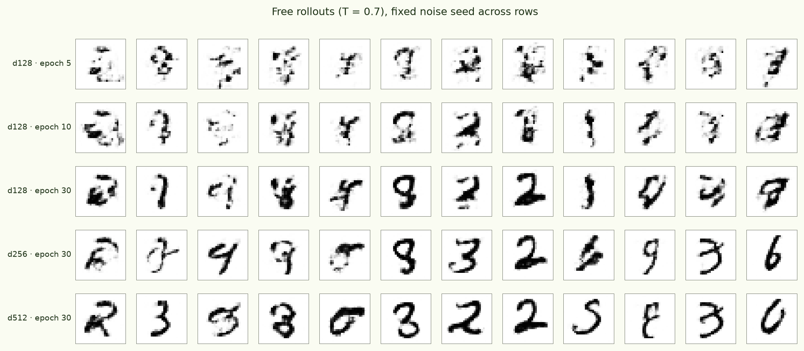
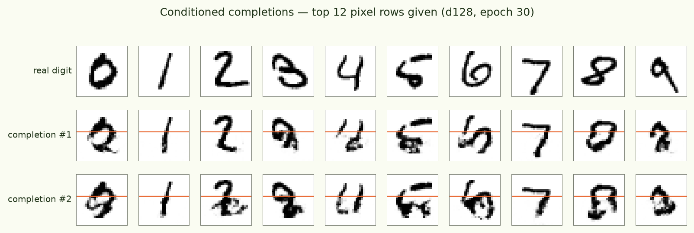
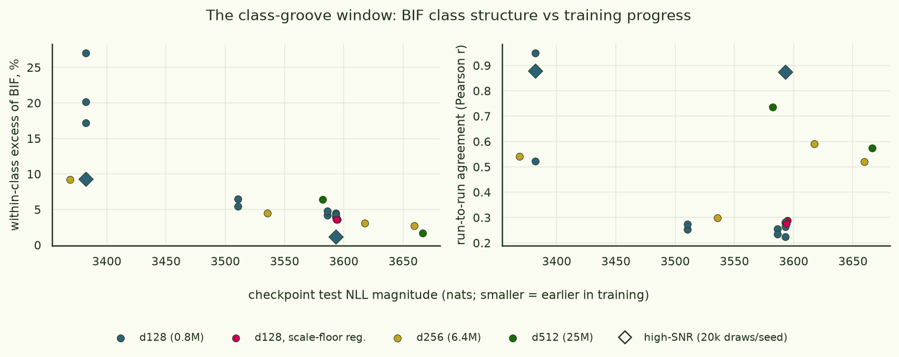
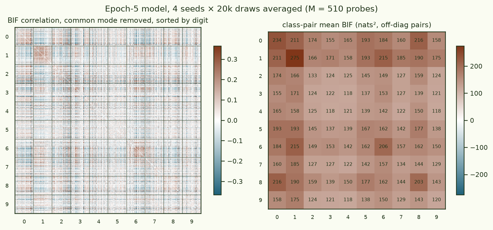
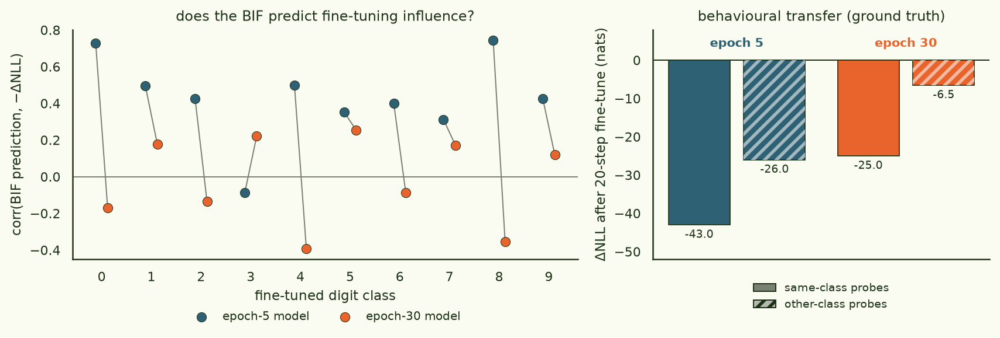
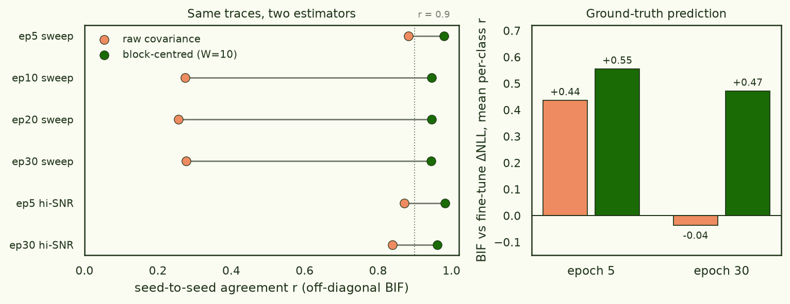
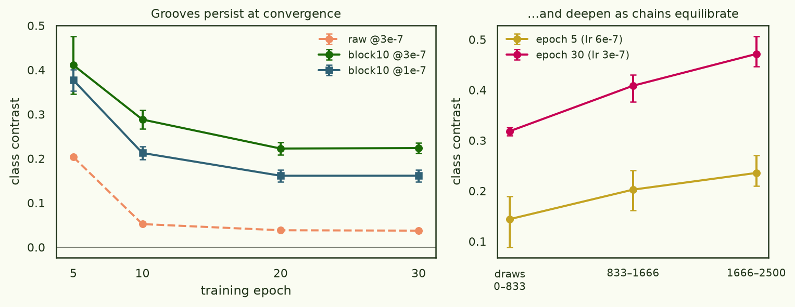

Loss-landscape grooves: Bayesian influence functions on autoregressive MNIST
Correction · 2026-07-03
The original headline of this piece — that the class grooves are wide open early in training and close at convergence — was an estimator artifact, not a fact about the loss landscape. Prompted by poor run-to-run agreement of the BIF estimates, we traced the problem to a slowly-mixing common mode in the SGLD chains (effective sample size ≈ 4 per chain at the step size a converged model tolerates) and fixed the estimator. With the fix, agreement between fully independent runs is r ≥ 0.94 in every cell — and the corrected picture is different: the grooves persist at convergence, and the BIF does predict fine-tuning behaviour there. §2 and §3 are kept as published, with the retracted claims struck through; §6 has the diagnosis, the fix, and the corrected results. The clustering negative (§4) survives the correction.
If natural abstractions are real, they should leave marks on a trained model's loss landscape: datapoints that share a latent (say, being a four) should sit in the same groove, so that wiggling the weights moves their losses together. This piece tests that directly on MNIST with the , estimated by sampling around a trained autoregressive patch-transformer (the standard recipe: train with AdamW, then sample the local posterior). Four results: within-class loss covariance exceeds between-class essentially everywhere (the groove exists); the effect is large only in a window early in training and the window is positioned by loss, not epochs; inside that window the BIF genuinely predicts what fine-tuning does, while at convergence it does not — even though the behavioural effect is still there (retracted — see §6); and unsupervised digit recovery from the BIF alone stays weak throughout.
§1Setup
Each 28×28 digit becomes a raster sequence of 49 patches of 4×4 pixels. A small decoder-only transformer predicts each patch given the previous ones, emitting a full-covariance multivariate distribution per patch (16 means + 16 diagonal + 120 off-diagonal Cholesky entries = 152 parameters — the entire pixel-level correlation structure inside a patch is modelled, and patch-to-patch structure comes from the autoregression).
- models
- d128·L4 (0.8M), d256·L8 (6.4M), d512·L8 (25M); dropout 0.1
- data
- MNIST 60k train / 10k test; uniform dequantisation, logit transform (λ=10⁻³)
- training
- AdamW 3e-4, cosine, 30 epochs, batch 256 — ~4 min on the 4090
- BIF
- devinterp SGLD (localised, γ=100, nβ=m/ln m), 8 chains × 250–2,500 draws, 2–4 independent seeds per estimate; probes: class-balanced test digits
- ground truth
- per-class AdamW fine-tune (20 steps @ 1e-5) → ΔNLL on every probe
- code & artefacts
- arcadia-impact/small-abstraction-test-{logs, mnist-ar} on HF (private)
First, the qualitative sanity check: what do these models actually draw? Free rollouts below, one model per row, same noise seed everywhere. The 0.8M model at convergence draws digit-like pseudo-glyphs; 25M draws recognisable digits.


§2The groove exists — inside a window
The BIF between probes i and j is the covariance of their per-sample losses under the local posterior. If digit classes are grooves, within-class covariance should exceed between-class. It does: in every one of ~20 sweep cells (across SGLD step size, localisation, checkpoint, model size, and a scale-floor regularisation ablation) the within-class mean exceeds the between-class mean, and fine-tuning-on-fours logic holds for most classes individually. But the size of the excess varies by an order of magnitude, and it organises perfectly along one axis: how far training has progressed.

Digit classes carve measurable grooves into the loss landscape — but the grooves are wide open only early in training, and they close as the minimum sharpens. Retracted: the closing was the estimator losing power, not the grooves closing — see §6.
Three details pin this down. First, the window is positioned by loss, not epochs: the 6.4M model at epoch 5 has the same test NLL as the 0.8M model at ~epoch 10, and its BIF stats land on the small model's epoch-10 point, not its epoch-5 point; a dense-checkpoint retrain confirms the 6.4M model at epoch 2 (loss-matched to small@5) shows the elevated gap (+9.2%). Second, at matched loss, capacity dilutes the relative class signal (9% at 6.4M vs 20–27% at 0.8M) even while making the estimate more reproducible. Third, this isn't estimator noise: at 20k draws/seed (diamonds) the late-training matrix is highly reproducible (r = 0.87 between fully independent runs) and its class excess is genuinely ~1%. Retracted, and worth dwelling on because the third point is exactly where we fooled ourselves: the high-draw estimate was reproducible, but what reproduced was a rank-one common mode — the class signal underneath it was real, ~40× larger than "~1%", and invisible to the raw covariance. What the window actually tracked is how hot SGLD is allowed to run at each checkpoint (mixing quality), which is itself set by the sharpening minimum. See §6.
The same sharpening shows up as a hard constraint on the sampler: SGLD step size ε = 10⁻⁵ explodes within 3 steps at convergence; 6×10⁻⁷ survives at epoch 5 but explodes by epoch 10; converged checkpoints only tolerate ~3×10⁻⁷. Regularising the predictive distribution (a floor on the per-pixel scale, 0.03 or 0.1) costs almost nothing in likelihood and does not buy any SGLD stability — the razor-sharp directions live in the trunk weights, not in the head's confidence.

§3Ground truth: the BIF predicts fine-tuning — early
The influence-function reading of the BIF makes an operational claim: if BIF(i, j) is large, fine-tuning on i should reduce loss on j. We tested it literally — fine-tune a fresh copy of the model on a single class for 20 AdamW steps, measure ΔNLL on all 510 probes, and correlate against the BIF's class-row prediction.

Fine-tuning on fours makes the model better at fours at every stage of training — but the BIF can only see that coming while the grooves are open (r ≈ 0.43 probe-level at epoch 5; ≈ 0 at convergence). Retracted: with the fixed estimator the BIF predicts fine-tuning at convergence too (r ≈ 0.47) — see §6.
This is the most interesting wedge in the data. The behavioural influence structure (fig. 5 right) barely changes between epoch 5 and epoch 30. What changes is whether the local posterior can see it: by convergence the class-relevant directions are frozen — posterior samples no longer fluctuate along them, so the loss covariance loses the signal that gradient fine-tuning still exploits. The "wedge" dissolved under the corrected estimator (§6): the local posterior sees the class structure at convergence just fine, once its samples are actually independent. The behavioural panel (fig. 5 right) stands unchanged.
§4What didn't work
| attempt | hope | result | verdict |
|---|---|---|---|
| spectral / k-means on raw BIF | clusters = digits | ARI ≤ 0.03 | no |
| seed-averaging + eigen-embedding | denoise → clusters | ARI 0.08 · NMI 0.17 | weak |
| Marchenko–Pastur eigenvalue cleaning | strip sampling noise | +0.01–0.03 ARI | marginal |
| spectral on the §6 fixed estimator | clean BIF → clusters | ARI ≤ 0.01 | no — negative survives |
| scale-floor regularisation (0.03 / 0.1) | flatter minimum → hotter SGLD | still diverges at 10⁻⁶ | no |
| within > between (structural) | grooves exist | ~20/20 cells | yes |
| fine-tune transfer (behavioural) | fours help fours | 10/10 classes | yes |
The clustering ceiling is the honest negative: class identity is a real but minority component of the posterior loss covariance even inside the window — the dominant components look like per-probe difficulty and style factors, not digit identity. Recovering the abstraction unsupervised from the BIF needs either much better estimators or a different object (e.g. covariance of per-token losses, or influence measured in the model's own preconditioned metric).
§5What's next
- Track the window densely: BIF every epoch from init, on one model. Moot as posed — §6 reframes the "window" as a property of the sampler. The right dense-tracking question is now how the (real, persistent) groove depth evolves under the fixed estimator at matched equilibration.
- Replication under a standard LM objective: a pixel-level autoregressive transformer (784 raster tokens, 16-level quantised pixels, tied embeddings, cross-entropy) is running the corrected recipe now — removes every exotic ingredient of the logistic-normal head.
- Part 2 of the spec: a larger dataset. A low-rank (factor-analysis) covariance head is already implemented and tested behind a config flag (Σ = D + VVᵀ, O(dk²) log-probs), making 48-dim CIFAR patches or bigger patch sizes cheap.
- Preconditioned influence: measure the BIF in the AdamW metric — still interesting, now as a comparison of geometries rather than an explanation for a (dissolved) wedge.
§6Correction: the window was the sampler's, not the landscape's
This section was added the day after publication, prompted by a simple complaint: two BIF runs that differed only in RNG seed didn't agree well enough. Chasing that complaint overturned the paper's headline. The diagnosis ran entirely on the saved loss traces (every SGLD draw of every run above is on HF), and was then confirmed with fresh runs on the same checkpoints.
Diagnosis. Within each run, split the chains in half and compare the two half-estimates; the prediction from that split-half agreement matched the observed across-run agreement almost exactly in all 21 archived runs (e.g. epoch-30 high-SNR: predicted 0.843, observed 0.840). So the disagreement was pure sampling noise — nothing systematic differed between runs. The noise itself was the interesting part: the probe-loss traces have an integrated autocorrelation time comparable to the entire run (τ ≈ 58 on 250-draw windows, ≈ 680 on 2,500-draw windows — a 1/f-like slow wander of the whole loss level), so a chain contributes only ~4–7 effective samples no matter how long it runs, and the raw full-window covariance never converges. Two symptoms in the archived data suddenly make sense: across-seed agreement sometimes decreased as draws were added (longer windows admit more un-averaged drift), and the late-training "≈1% class excess" — measured at the coldest step size, where mixing is slowest — was the class signal drowning under a reproducible rank-one common mode, not the signal disappearing.
Fix. Estimate the covariance within short windows: centre each non-overlapping block of 10 recorded draws, take the block covariance, and average blocks (a high-pass filter on the trace; linear detrending is too weak — the wander isn't linear). Applied to the same saved traces, every cell of the study jumps to seed-to-seed r ≥ 0.94, including the cheap 250-draw cells that raw estimation had at r ≈ 0.28 (fig. 6). The expensive "high-SNR" program existed to compensate for an estimator that was discarding the signal.

What the corrected estimates say. With reproducibility no longer confounding everything (fig. 7): the within-class excess at convergence is not ~1% — it is ~20–25% at matched budget, and grows to ~40–50% as chains are given longer to equilibrate (the class-covariance structure keeps developing for thousands of SGLD steps after the loss looks flat, so budget-matched comparisons are mandatory). The decline from epoch 5 (~40%) to epoch 20+ (~22%, at step size 3×10⁻⁷ on 2,050 probes) is real but modest — a far cry from the order-of-magnitude collapse we published. And the §3 wedge dissolves: the local posterior sees the same class structure that fine-tuning exploits, at every checkpoint we can sample (per-class prediction r ≈ 0.56 at epoch 5, ≈ 0.47 at epoch 30, sign correct 10/10 and 9/10). What is genuinely confirmed from the original §2 is the sharpness story for the sampler itself: converged minima still tolerate only ε ≈ 3×10⁻⁷ (6×10⁻⁷ still explodes at epoch 30 in fresh runs), so late-training chains mix slowly — which is precisely why the raw estimator failed there and manufactured the "window".

Fresh-run confirmation. Rerunning from scratch on the archived checkpoints (8 chains × 650 draws, 510 probes, two independent seeds per cell) reproduces both the disease and the cure. Note the epoch-5 cold-step row, where the raw estimator gets worse than the archived 250-draw runs precisely because this run is longer; and the bottom row, where — at matched step size and budget — the converged model's grooves come out as deep as the early ones (block-10 contrast +0.29/+0.30 vs +0.18/+0.26 at epoch 5). A longer-equilibration rerun of that comparison is in flight; on the archived 20k-draw traces the equilibrated epoch-30 contrast reaches ~0.47.
| fresh cell | raw seed-r | block seed-r | class contrast | gate ≥ 0.9 |
|---|---|---|---|---|
| epoch 5 · ε = 6×10⁻⁷ | 0.93 | 0.95 | +0.12 / +0.14 | pass |
| epoch 5 · ε = 3×10⁻⁷ | 0.70 | 0.98 | +0.18 / +0.26 | pass |
| epoch 30 · ε = 6×10⁻⁷ | diverges @ step 521 | — | sharp minimum | |
| epoch 30 · ε = 3×10⁻⁷ | 0.26 | 0.96 | +0.29 / +0.30 | pass |
Recipe, going forward. Every BIF run now self-reports its split-half agreement, autocorrelation time, and effective sample size (if these are bad, the estimate is pre-announced as noise); covariance is block-centred; and science cells are gated on across-seed agreement ≥ 0.9 before any conclusions get drawn. The general lesson for SGLD-based observables seems worth stating plainly: at the step sizes sharp minima force on you, the chain's slow mode never mixes — anything computed from long-window covariances inherits that non-convergence silently. Estimate from within-window fluctuations, and make every run prove its own reproducibility.
650e634+; built by codex-exec implementers with Claude reviewer gates. Correction analysis + block estimator: commits 674f996–9cf9180+).
Artefacts · HF arcadia-impact/small-abstraction-test-logs (all BIF matrices, SGLD traces, sweep manifests — the §6 diagnosis ran on these) · arcadia-impact/small-abstraction-test-mnist-ar (8 checkpoints).
Compute · RunPod RTX 4090 (~4.5 h, sweep + scale) + A100 80GB (~2.5 h, high-SNR + ground truth); ≈ $7 total. §6 diagnosis: CPU on the archived traces; fresh confirmation ~40 min on one further 4090.